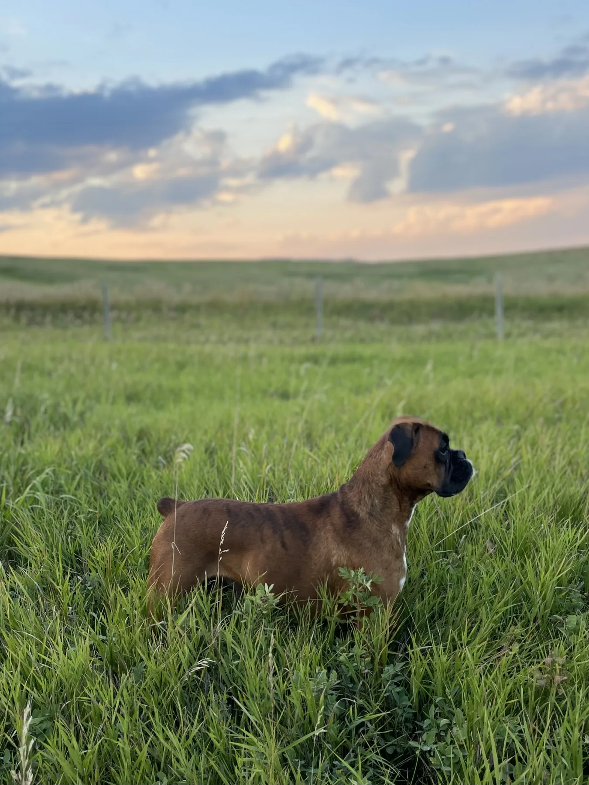
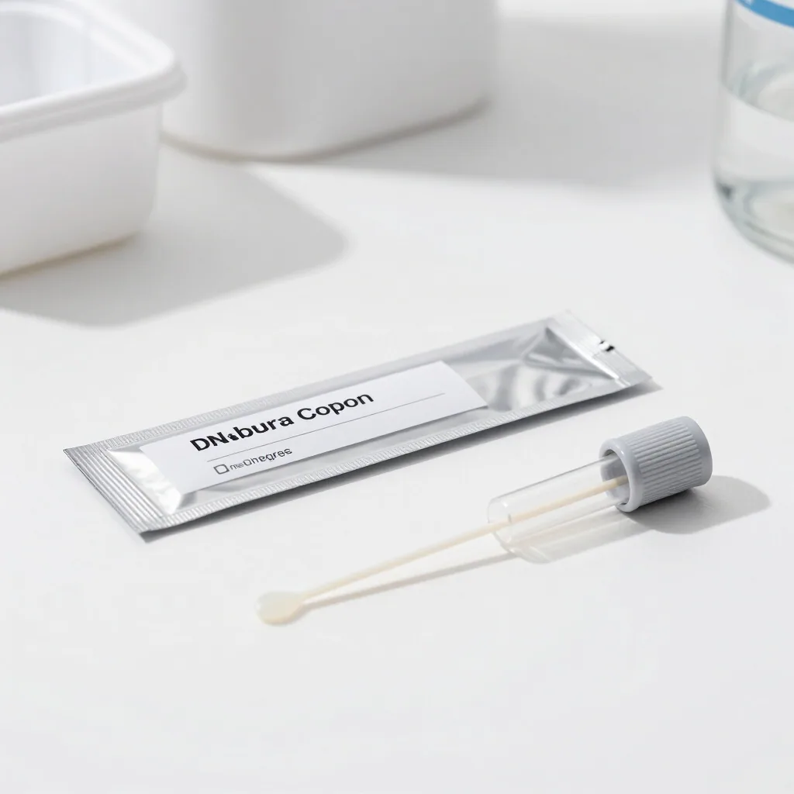

Marker
T4 (Thyroxine)
Measures the total amount of thyroxine in the blood. Low levels may indicate hypothyroidism, but can be affected by other non-thyroidal illnesses.

Comprehensive thyroid evaluation is a pillar of responsible Boxer breeding. We monitor baseline levels and antibody markers to ensure long-term endocrine health.


Normal Range
Euthyroid function; no clinical intervention required.
Low FT4 / High TSH
Primary Hypothyroidism; clinical management likely needed.
Comprehensive thyroid screening is important for identifying autoimmune thyroiditis, the primary cause of hypothyroidism in Boxers. Our guide helps you interpret the essential markers used in diagnostic panels.
Marker
Measures the total amount of thyroxine in the blood. Low levels may indicate hypothyroidism, but can be affected by other non-thyroidal illnesses.
Marker
Thyroglobulin Autoantibody. A positive result indicates hereditary autoimmune thyroiditis even if hormone levels are currently normal.
Marker
Measures the unbound thyroxine available to tissues. This is the most accurate baseline test as it is less influenced by other health factors.
Marker
Measures the active form of thyroid hormone. Often used to detect autoantibodies that might falsely elevate T4 readings.
Marker
Endogenous Canine TSH. High levels usually confirm primary hypothyroidism when combined with low T4 levels.
Marker
A comprehensive assessment including T4, freeT4, TSH, and TgAA. This is the only reliable way to clear a breeding dog for genetic soundness.